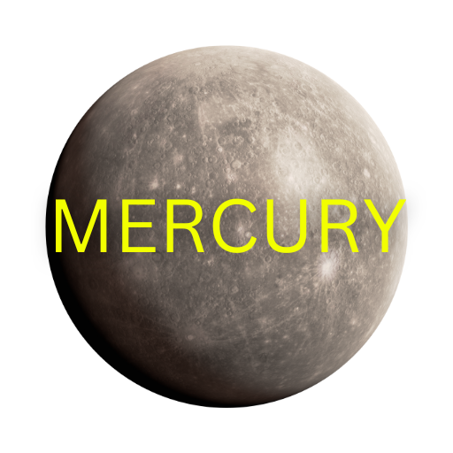

Mercury is the smallest and closest planet to the Sun in our solar system, known for its extreme temperatures and swift orbit. Despite being just slightly larger than Earth's Moon, it has a dense, metallic core that makes up most of its mass. Mercury has virtually no atmosphere to trap heat, causing daytime temperatures to soar up to 800°F (430°C) and nighttime temperatures to plummet to -330°F (-200°C). Its surface is heavily cratered, resembling the Moon’s, and features vast plains and steep cliffs formed by the planet’s cooling and shrinking over billions of years. Mercury completes an orbit around the Sun in just 88 Earth days, earning it the nickname of the fastest planet. However, it rotates very slowly, taking about 59 Earth days to complete one spin on its axis, which results in long, harsh days and nights.